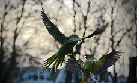

Птицы

Птицы (лат. Aves) — группа теплокровных яйцекладущих
позвоночных животных, традиционно рассматриваемая
в ранге отдельного класса. Характерный признак — покров
из перьев, который предохраняет тело от неблагоприятных
изменений температуры и играет важную роль при полёте.
Коты

Кошка (лат. Felis catus) — домашнее животное, млекопитающее
семейства кошачьих отряда хищных. В русском языке слово
«кошка» означает либо представителя вида Felis catus вообще
независимо от пола, либо самку этого вида. Самца называют
«кот», а детёныша кошки — «котёнок» (мн. ч. — «котята»).
рыбы

Рыба — водное позвоночное животное, дышащее жабрами, с конечностями в виде
плавников и кожей, обычно покрытой чешуёй